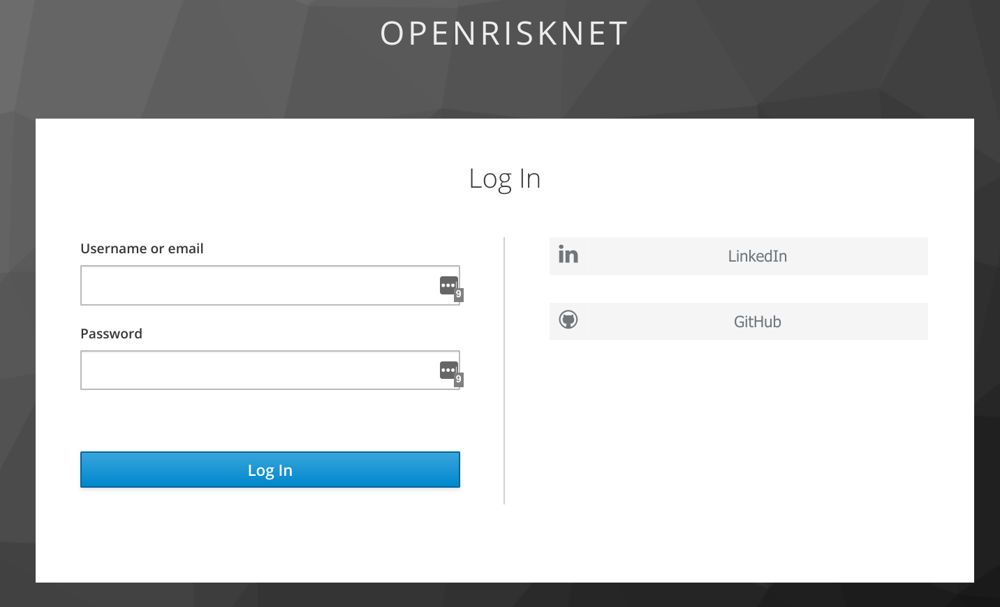

The OpenRiskNet reference site using social authentication providers for managing logins. Currently the following providers are supported:
We prefer you use LinkedIn if possible as that potentially allows us to use LinkedIn for collaboration and communication amongst our users.
Using a social means that we NEVER see your password. You authenticate with the social provider and if successful they forward you back to the ORN site. We only store minimal information about you, your name and email.
The OpenRiskNet applications use a single sign on (SSO) system so that once you are logged in you are logged in to all ORN applcations on the site. No need for multiple usernames and passwords. The first time you access an application that requires authentication you will be taken to the login page and you specify which social provider to use.
Choose the login provider on the right hand side (preferably use LinkedIn) and you will be taken to to that site and asked to log in (if not already logged in). The first time you do this you will be asked to confirm that you want OpenRiskNet to use your login. You must agree to this. Once you login you are automatically redirected back to the OpenRiskNet site.
We provide open access to the OpenRiskNet applications on a "best effort" basis to allow users to evaluate and test the environment. This environment is not suitable for production use or for handling data that is confidential. Instead you should set up your own OpenRiskNet VRE that is under your control. Information on this can be found here.
We do not restrict who uses the OpenRiskNet applications, but as the resources on which it runs are limited we expect usage to be resticted to a reasonable level. If we consider this is being abused then we may disable accounts or restrict access to particular applications.
We aim to support our users on a "best effort" basis. We cannot provide guarantees of response times, but we aim to assist as best we can. If you need support the best mecahanism is through our FreshDesk support system.
This project is funded by the European Union
OpenRiskNet: Open e-Infrastructure to Support Data Sharing, Knowledge Integration and in silico Analysis and Modelling in Risk Assessment
Project Number 731075